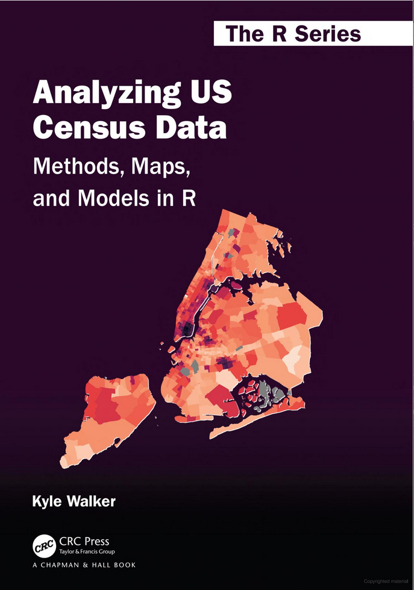

Lab 2 - tidycensus and RStudio (Part 1)
Lab 2 / Week 2

RStudio Settings
Before continuing, ensure that you have these setting changed in RStudio.

Lab 2 Background Readings
- See Analyzing US Census Data: Methods, Maps, and Models in R
- See Guide for Reproducible Research
- See Advantages and Limits in the Adoption of Reproducible Research and R-Tools for the Analysis of Omic Data
- See R Studio Cheatsheets
- See Markdown Cheatsheets
- See Visual design guidelines
- See Good enough practices in scientific computing. Wilson, Greg, Jennifer Bryan, Karen Cranston, Justin Kitzes, Lex Nederbragt, and Tracy K. Teal. 2017. “Good Enough Practices in Scientific Computing.” PLOS Computational Biology 13 (6): e1005510.
- See Data Organization in Spreadsheets. Broman, Karl W., and Kara H. Woo. 2018. “Data Organization in Spreadsheets.” The American Statistician, April.
Turn-in
What to turn-in
Please do the R work in R Markdown. Your Rmd file will be generated. Save this file as a PDF (or print to PDF) and turn in the PDF file(s) and the Rmd file(s).
Work through Chapters 1 through 4 of Analyzing US Census Data. Use an Rmd file to keep track of your progress.
At the beginning of the Rmd file, use Markdown formatting to answer these questions:
- What worked well for you and what didn't work?
- What do you see as the value in using RMarkdown?
- Based on lab 2 so far, what things would you like to do?Hint: Use PDFSam (or install it with Chocolatey) to merge multiple PDFs together. For example, create a layout in QGIS and export those maps to PDF. Then use PDFSam to merge those files.